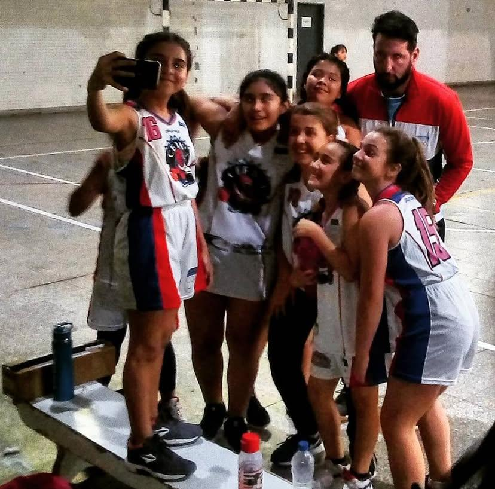
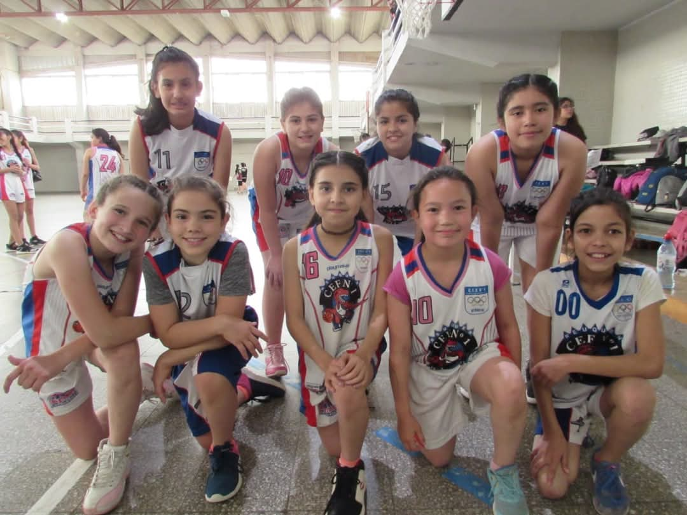
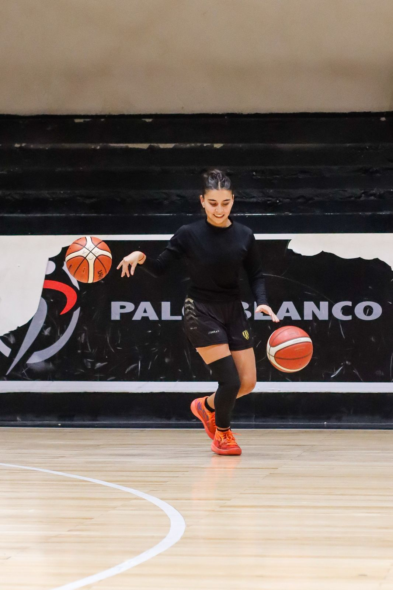
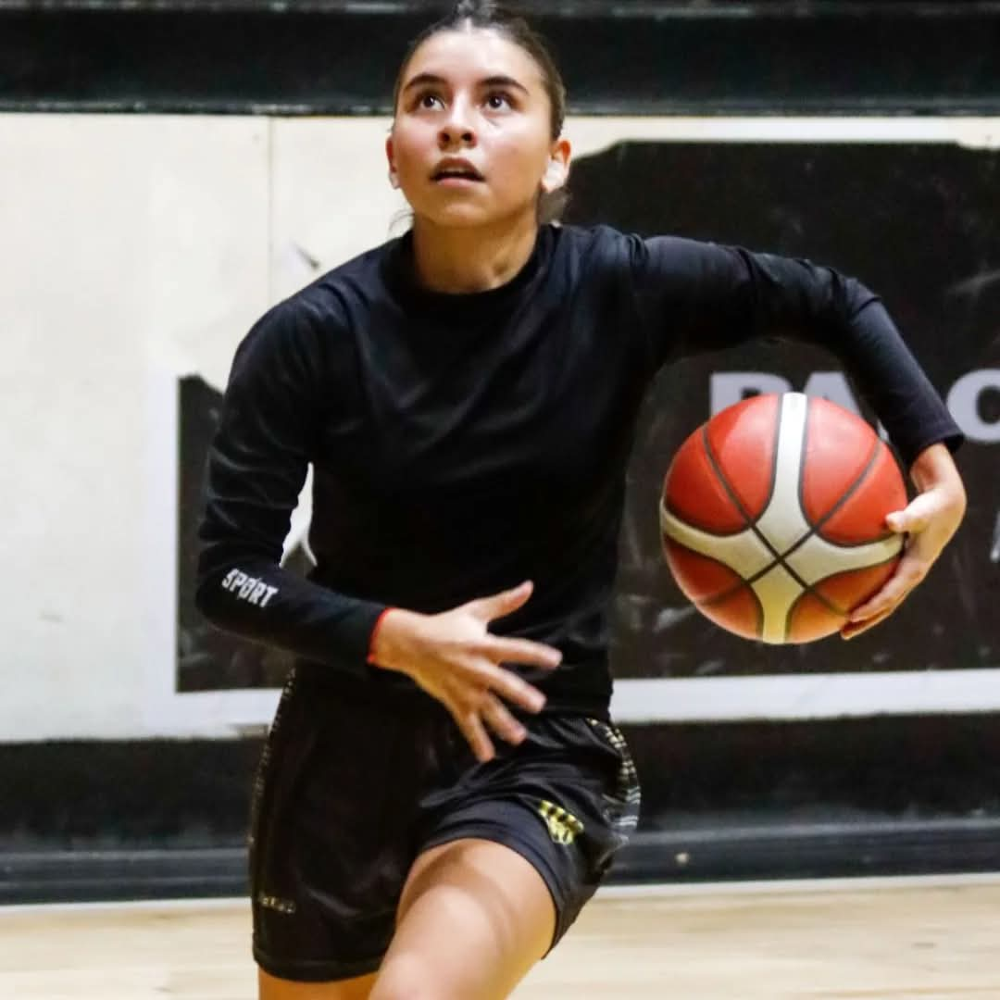

En realidad cuando empece a jugar a basquet no tenia pensado hacer solo ese deporte, a lo largo de mi infancia jugue distintos deportes, entre esos gimnasia artistica y natacion. Comence a los 7 años a hacer deportes porque no podia queadarme quieta y mis papas tampoco por lo visto, estuve desde los siete años haca los 12 en el CEF Nº1 lugar del cual tengo muy buenos recuerdos y anecdotas, aparte de amistades. Durante la pandemia este lugar cerro por cuarentena y no pude seguir con ninguna actividad. Esto fue dursimo porque necesitaba hacer algo si o si, pero bueno, por suerte conocimos a una mujer que me aconsejo jugar en el club bigua, entoces volvi a jugar ahi a mis 13 añitos.
En bigua tuve la oportunidad de jugar varias instancias nacionales y provinciales, llegue a la preseleccion Neuquina pero por temas escolares no pude asistir. Tambien me dieron la oportunidad de debutar en primera a mis 14 años
No tengo recuerdos de haber ganado algun torneo con mi categoria, siempre gane con categorias mas grandes, asi que no lo tomo como un triunfo propio
A continuacion, algunas imagenes y videos jugando ;)
   